x <- tsibble(t = 1:20, index = t)
stretch <- x |> stretch_tsibble(.init = 6, .step = 2) AFRICAST
AFRICASTTidy time series & forecasting in R
Cross-validation and residual diagnostics
Session 9 of 10


workshop.f4sg.org/africastForecasting for Social Good
Time series cross-validation
Issue with traditional train/test split
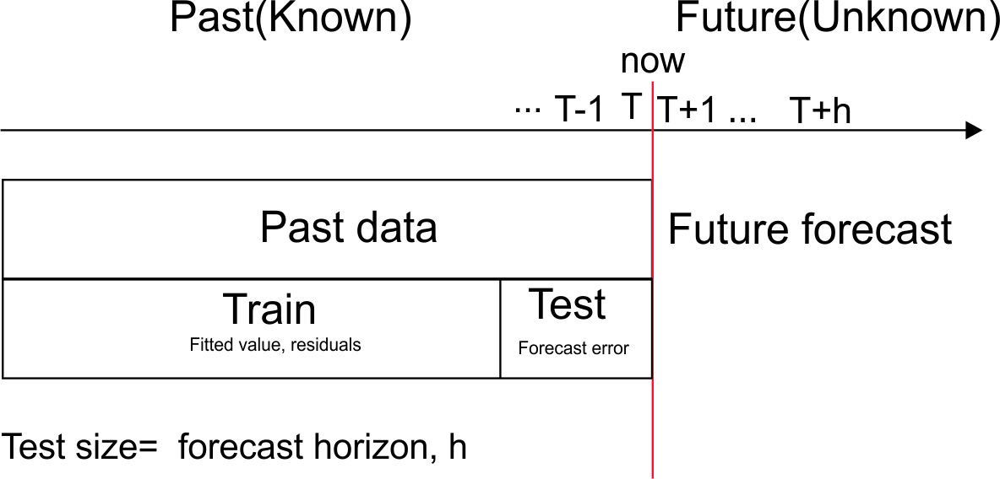
Forecasting from a rolling origin
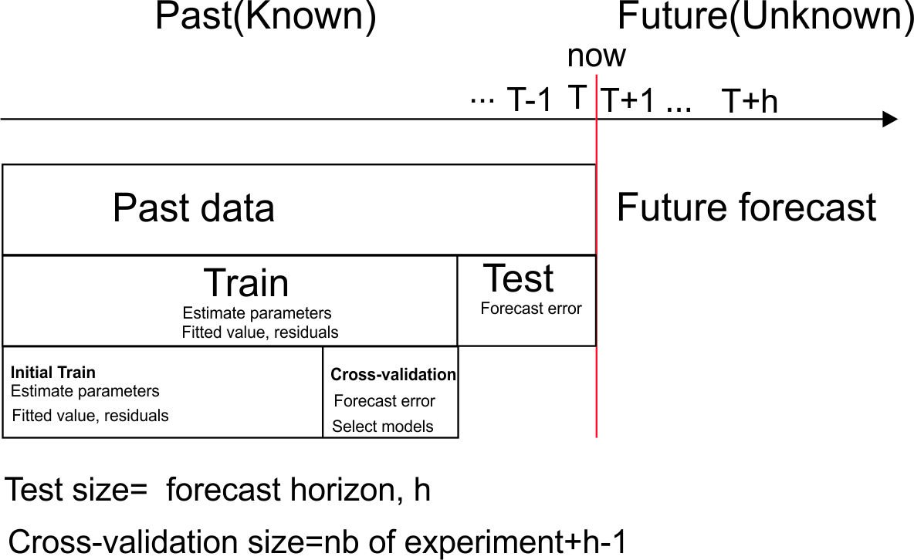
Time series cross-validation
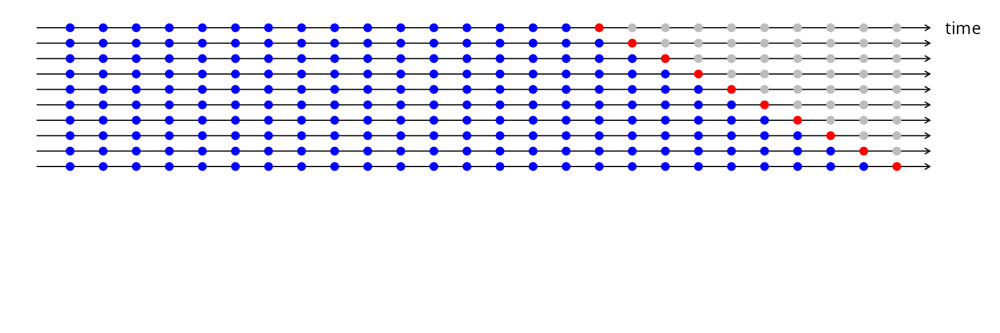
- Forecast accuracy averaged over test sets.
- Also known as “evaluation on a rolling forecasting origin”
Creating the rolling training sets
Three functions roll a tsibble into windows, numbered by a new .id column.
stretch_tsibble(): extends a growing window with new data.slide_tsibble(): shifts a fixed length window through the data.tile_tsibble(): moves a fixed length window without overlap.
For time series cross-validation, stretching windows are most commonly used.
Stretch: stretch_tsibble()
A tsibble x of 20 observations.
The first window holds the first .init = 6 observations.
The next window adds .step = 2 observations.
Keep growing until the window reaches the end of the data: 8 windows, numbered by .id.
Slide: slide_tsibble()
A tsibble x of 20 observations.
The first window holds the first .size = 8 observations.
The next window moves along by .step = 2 observations, keeping its size.
Keep sliding until the window reaches the end of the data: 7 windows.
Tile: tile_tsibble()
A tsibble x of 20 observations.
The first tile holds the first .size = 5 observations.
The next tile starts where the last ended, so the tiles never overlap.
Keep tiling until the data are used up: 4 tiles.
Rolling origins for drug sales
Monthly antidiabetic drug sales in Australia ($ millions), from 2000. Stretch with a minimum length of 24, growing by 1 each step.
# A tsibble: 3,819 x 3 [1M]
# Key: .id [67]
Month Cost .id
<mth> <dbl> <int>
1 2000 Jan 12.5 1
2 2000 Feb 7.46 1
3 2000 Mar 8.59 1
4 2000 Apr 8.47 1
# ℹ 3,815 more rowsFit models to each window
Estimate seasonal naïve, naïve and drift models for each window.
# A mable: 67 x 4
# Key: .id [67]
.id snaive naive drift
<int> <model> <model> <model>
1 1 <SNAIVE> <NAIVE> <RW w/ drift>
2 2 <SNAIVE> <NAIVE> <RW w/ drift>
3 3 <SNAIVE> <NAIVE> <RW w/ drift>
4 4 <SNAIVE> <NAIVE> <RW w/ drift>
# ℹ 63 more rowsForecasts from each window
Produce 12-step-ahead forecasts from each model and window.
# A fable: 2,412 x 5 [1M]
# Key: .id, .model [201]
.id .model Month Cost .mean
<int> <chr> <mth> <dist> <dbl>
1 1 snaive 2002 Jan N(14, 1.7) 14.5
2 1 snaive 2002 Feb N(8, 1.7) 8.05
3 1 snaive 2002 Mar N(10, 1.7) 10.3
4 1 snaive 2002 Apr N(9.8, 1.7) 9.75
# ℹ 2,408 more rowsWhich method will win?
Which method do you expect to forecast antidiabetic drug sales best?
- Seasonal naïve
- Naïve
- Drift
Cross-validated accuracy
# A tibble: 3 × 6
.model RMSE MAE MASE winkler CRPS
<chr> <dbl> <dbl> <dbl> <dbl> <dbl>
1 drift 3.95 3.05 1.89 27.0 2.43
2 naive 3.87 2.96 1.84 25.0 2.31
3 snaive 2.42 1.94 1.20 15.3 1.42Errors are averaged over all origins and all 12 horizons.
From cross-validation to forecasts
Seasonal naïve wins the cross-validation. How do you produce the forecasts you deliver?
- Use the forecasts from the last window
- Refit seasonal naïve on all the data
- Average the forecasts from every window
Residual diagnostics
Forecasting residuals
Residuals in forecasting: difference between observed value and its fitted value (one-step forecast) on the training data: \(e_t = y_t-\hat{y}_{t|t-1}\).
Assumptions
- \(\{e_t\}\) uncorrelated. If they aren’t, then information left in residuals that should be used in computing forecasts.
- \(\{e_t\}\) have mean zero. If they don’t, then forecasts are biased.
Useful properties (for prediction intervals)
- \(\{e_t\}\) have constant variance.
- \(\{e_t\}\) are normally distributed.
Facebook closing stock price
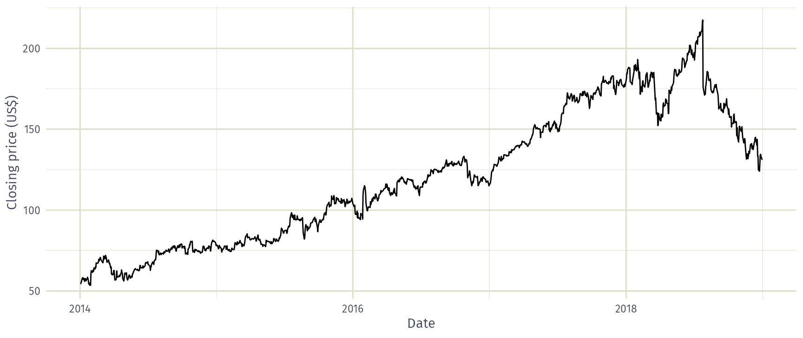
Naïve model of Facebook’s stock price
# A tsibble: 1,258 x 7 [1]
# Key: Symbol, .model [1]
Symbol .model trading_day Close .fitted .resid .innov
<chr> <chr> <int> <dbl> <dbl> <dbl> <dbl>
1 FB NAIVE(Close) 1 54.7 NA NA NA
2 FB NAIVE(Close) 2 54.6 54.7 -0.150 -0.150
3 FB NAIVE(Close) 3 57.2 54.6 2.64 2.64
4 FB NAIVE(Close) 4 57.9 57.2 0.720 0.720
5 FB NAIVE(Close) 5 58.2 57.9 0.310 0.310
6 FB NAIVE(Close) 6 57.2 58.2 -1.01 -1.01
7 FB NAIVE(Close) 7 57.9 57.2 0.720 0.720
8 FB NAIVE(Close) 8 55.9 57.9 -2.03 -2.03
9 FB NAIVE(Close) 9 57.7 55.9 1.83 1.83
10 FB NAIVE(Close) 10 57.6 57.7 -0.140 -0.140
# ℹ 1,248 more rowsFitted values
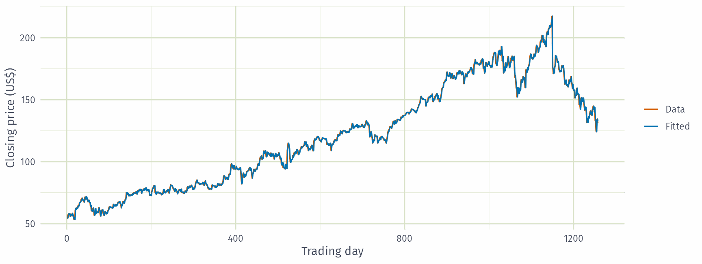
Fitted values (last 158 trading days)
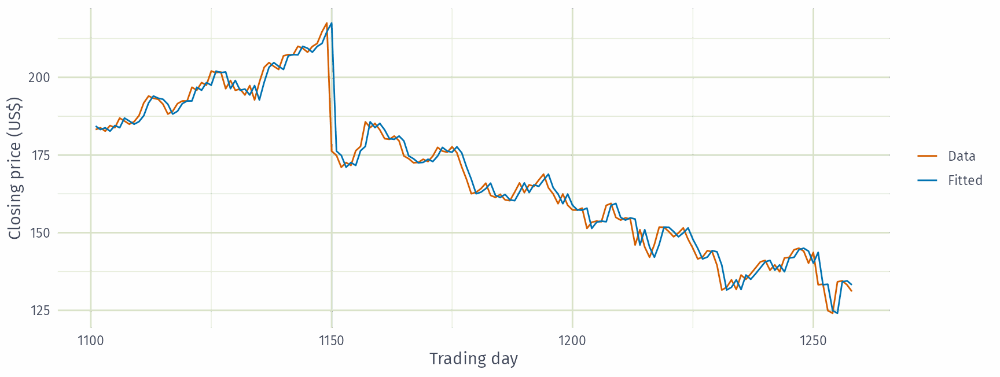
Residuals over time
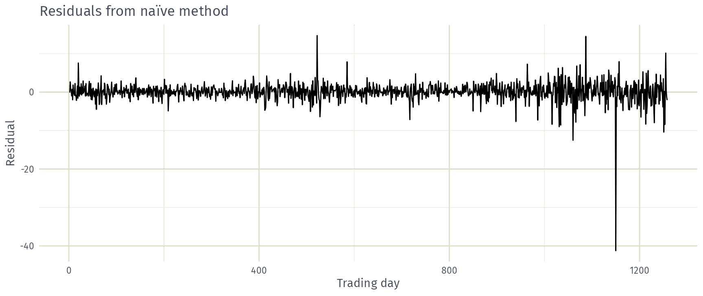
Constant variance?
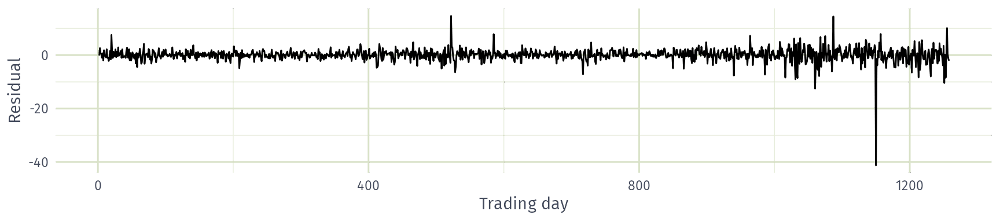
Do these residuals have constant variance?
- Yes
- No
Histogram of residuals
Normally distributed?
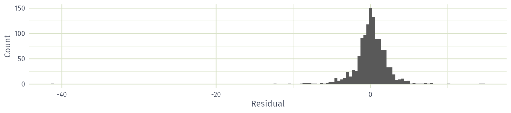
Do these residuals look normally distributed?
- Yes
- No
ACF of residuals
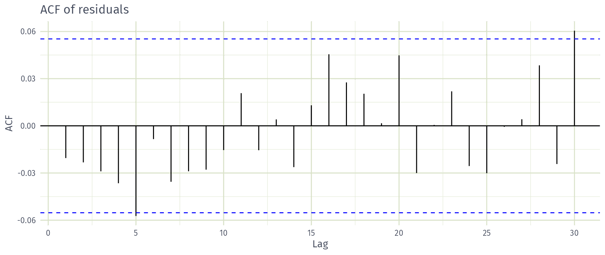
White noise?
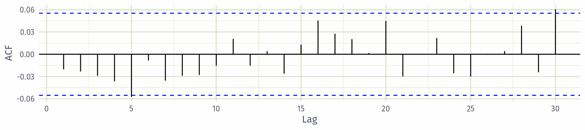
Do these residuals look like white noise?
- Yes
- No
Checking the ACF of residuals
We assume that the residuals are white noise (uncorrelated, mean zero, constant variance). If they aren’t, then there is information left in the residuals that should be used in computing forecasts.
So a standard residual diagnostic is to check the ACF of the residuals of a forecasting method.
We expect these to look like white noise.
Combined diagnostic graph
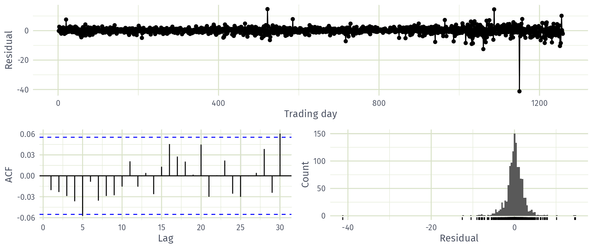
Ljung-Box test: recap
Recall from the regression session: test whether the first \(\ell\) autocorrelations \(r_k\) of the residuals are jointly zero.
\(\displaystyle Q = T(T+2) \sum_{k=1}^\ell (T-k)^{-1}r_k^2\)
- Small \(Q\) (large \(p\)-value): consistent with white noise.
- \(\ell=10\) for non-seasonal data, \(\ell=2m\) for seasonal data (at most \(T/5\));
dof\(= K\) estimated parameters.
Ljung-Box test of the naïve residuals
# A tibble: 1 × 4
Symbol .model lb_stat lb_pvalue
<chr> <chr> <dbl> <dbl>
1 FB NAIVE(Close) 12.1 0.276\(p = 0.276 > 0.05\): no evidence against white noise.
What the residuals tell us
- Mean close to zero: the forecasts are unbiased.
- Uncorrelated: no information is left in the residuals.
- Variance is not constant: it grows later in the series.
- Heavy tails and a large outlier: the residuals are not normal.
The point forecasts are fine, but the prediction intervals may be inaccurate.
Recap
Recap
- Time series cross-validation averages forecast accuracy over many rolling origins, not a single test set.
- Roll the training data into windows with
stretch_tsibble(), fit models to each window, forecast and compare withaccuracy(). - Residual diagnostics check that the best model’s residuals are uncorrelated with mean zero, and ideally have constant variance and are normal.
- Check them with
gg_tsresiduals()and the Ljung-Box test before forecasting.